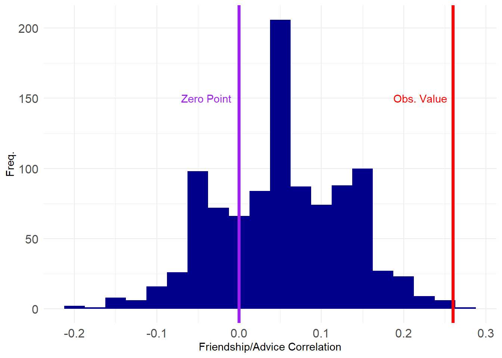

Network Regression Using Permutation
1 Cross-Network Correlation Using Permutation
Consider the case where we measure two or more ties on the same set of actors. In that case, we could entertain hypotheses of the form: Is having a tie of type \(A\) positively or negatively correlated with a tie of type \(B\)?
We can use an approach similar to the edge-swapping strategy to answer this question, since a bivariate correlation between ties between two networks is just like the univariate statistics we computed earlier (in that case the modularity, but it could been any network level statistic like the diameter or centralization).
Let’s see an example. Suppose we have a hypothesis that the relation of “friendship” should be correlated to that of “advice”; that is, people are more likely to seek advice from friends.
The Krackhardt High-Tech Managers data contains network information on both the advice and friendship relations between the actors. Let’s load up the advice network:
And extract the corresponding adjacency matrices:
The correlation between these two ties is then:
Which is obtained by “vectorizing” the matrices and computing the Pearson correlation between the dyad vector (of length \(21 \times 21 = 441\)) corresponding to friendship ties and the dyad vector corresponding to advice ties.
Here, we see that there is a positive correlation between the two (\(r = 0.26\)) suggesting people tend to seek advice from friends (or befriend their advisors/advisees, as correlations don’t imply directionality).
However, is this correlation larger than we would expect by chance? For that, we need to know the range of correlations that would be obtained between on of the networks (e.g., advice) and a suitably randomized version of the other (e.g., friendship).
The “permutation” approach (Borgatti et al. 2024, chap. 14)—sometimes referred to by the less-than-wieldy name of the Quadratic Assignment Procedure (QAP) (Krackhardt 1988)—allows us to do that.
Recall from our discussion of blockmodeling that a permutation of an adjacency matrix is just a reshuffling of its rows and columns.
For instance the original adjacency matrix of the Krackhardt Managers friendship nomination network is shown in Table 1 (a).
We can permute the rows and columns of the matrix by randomly sampling numbers between 1 and 21 (the number of nodes in the network) and re-ordering the rows and columns of the matrix according to this new vector:
[1] 17 15 13 1 11 12 20 9 8 18 21 5 16 4 2 7 10 3 19 14 6The new permuted matrix is shown in Table 1 (b).
| 0 | 1 | 0 | 1 | 0 | 0 | 0 | 1 | 0 | 0 | 1 | 1 | 0 | 0 | 1 | 1 | 1 | 0 | 1 | 0 | 0 |
| 1 | 0 | 0 | 1 | 1 | 1 | 0 | 0 | 0 | 0 | 1 | 0 | 0 | 0 | 0 | 1 | 1 | 1 | 1 | 0 | 1 |
| 0 | 0 | 0 | 0 | 0 | 0 | 0 | 0 | 0 | 1 | 1 | 0 | 0 | 1 | 1 | 0 | 1 | 0 | 1 | 0 | 0 |
| 1 | 1 | 0 | 0 | 0 | 0 | 0 | 1 | 0 | 0 | 1 | 1 | 0 | 0 | 0 | 1 | 1 | 0 | 0 | 0 | 0 |
| 0 | 1 | 0 | 0 | 0 | 0 | 0 | 0 | 1 | 1 | 1 | 0 | 1 | 1 | 1 | 0 | 1 | 0 | 1 | 0 | 1 |
| 0 | 1 | 0 | 0 | 0 | 0 | 1 | 0 | 1 | 0 | 0 | 1 | 0 | 0 | 1 | 0 | 1 | 0 | 0 | 0 | 1 |
| 0 | 0 | 0 | 0 | 0 | 1 | 0 | 0 | 0 | 0 | 0 | 0 | 0 | 1 | 0 | 0 | 1 | 0 | 0 | 0 | 0 |
| 1 | 0 | 0 | 1 | 0 | 0 | 0 | 0 | 0 | 1 | 1 | 0 | 0 | 0 | 0 | 0 | 1 | 0 | 0 | 0 | 0 |
| 0 | 0 | 0 | 0 | 1 | 1 | 0 | 0 | 0 | 1 | 1 | 0 | 0 | 0 | 1 | 0 | 1 | 0 | 0 | 0 | 0 |
| 0 | 0 | 1 | 0 | 1 | 0 | 0 | 1 | 1 | 0 | 0 | 1 | 0 | 0 | 0 | 1 | 1 | 0 | 0 | 1 | 0 |
| 1 | 1 | 1 | 1 | 1 | 0 | 0 | 1 | 1 | 0 | 0 | 1 | 1 | 0 | 1 | 0 | 1 | 1 | 1 | 1 | 0 |
| 1 | 0 | 0 | 1 | 0 | 1 | 0 | 0 | 0 | 1 | 1 | 0 | 0 | 0 | 0 | 0 | 1 | 0 | 1 | 0 | 1 |
| 0 | 0 | 0 | 0 | 1 | 0 | 0 | 0 | 0 | 0 | 1 | 0 | 0 | 0 | 0 | 0 | 0 | 0 | 0 | 0 | 0 |
| 0 | 0 | 1 | 0 | 1 | 0 | 1 | 0 | 0 | 0 | 0 | 0 | 0 | 0 | 1 | 0 | 1 | 0 | 1 | 0 | 0 |
| 1 | 0 | 1 | 0 | 1 | 1 | 0 | 0 | 1 | 0 | 1 | 0 | 0 | 1 | 0 | 0 | 1 | 0 | 1 | 0 | 0 |
| 1 | 1 | 0 | 1 | 0 | 0 | 0 | 0 | 0 | 1 | 0 | 0 | 0 | 0 | 0 | 0 | 1 | 0 | 0 | 0 | 0 |
| 1 | 1 | 1 | 1 | 1 | 1 | 1 | 1 | 1 | 1 | 1 | 1 | 0 | 1 | 1 | 1 | 0 | 0 | 1 | 1 | 1 |
| 0 | 1 | 0 | 0 | 0 | 0 | 0 | 0 | 0 | 0 | 1 | 0 | 0 | 0 | 0 | 0 | 0 | 0 | 0 | 1 | 1 |
| 1 | 1 | 1 | 0 | 1 | 0 | 0 | 0 | 0 | 0 | 1 | 1 | 0 | 1 | 1 | 0 | 1 | 0 | 0 | 1 | 0 |
| 0 | 0 | 0 | 0 | 0 | 0 | 0 | 0 | 0 | 1 | 1 | 0 | 0 | 0 | 0 | 0 | 1 | 1 | 1 | 0 | 0 |
| 0 | 1 | 0 | 0 | 1 | 1 | 0 | 0 | 0 | 0 | 0 | 1 | 0 | 0 | 0 | 0 | 1 | 1 | 0 | 0 | 0 |
| 0 | 1 | 0 | 1 | 1 | 1 | 1 | 1 | 1 | 0 | 1 | 1 | 1 | 1 | 1 | 1 | 1 | 1 | 1 | 1 | 1 |
| 1 | 0 | 0 | 1 | 1 | 0 | 0 | 1 | 0 | 0 | 0 | 1 | 0 | 0 | 0 | 0 | 0 | 1 | 1 | 1 | 1 |
| 0 | 0 | 0 | 0 | 1 | 0 | 0 | 0 | 0 | 0 | 0 | 1 | 0 | 0 | 0 | 0 | 0 | 0 | 0 | 0 | 0 |
| 1 | 1 | 0 | 0 | 1 | 1 | 0 | 0 | 1 | 0 | 0 | 0 | 1 | 1 | 1 | 0 | 0 | 0 | 1 | 0 | 0 |
| 1 | 1 | 1 | 1 | 0 | 1 | 1 | 1 | 1 | 1 | 0 | 1 | 0 | 1 | 1 | 0 | 0 | 1 | 1 | 0 | 0 |
| 1 | 0 | 0 | 1 | 1 | 0 | 0 | 0 | 0 | 0 | 1 | 0 | 0 | 1 | 0 | 0 | 1 | 0 | 1 | 0 | 1 |
| 1 | 0 | 0 | 0 | 1 | 0 | 0 | 0 | 0 | 1 | 0 | 0 | 0 | 0 | 0 | 0 | 1 | 0 | 1 | 0 | 0 |
| 1 | 1 | 0 | 0 | 1 | 0 | 0 | 0 | 0 | 0 | 0 | 1 | 0 | 0 | 0 | 0 | 1 | 0 | 0 | 0 | 1 |
| 1 | 0 | 0 | 1 | 1 | 0 | 0 | 0 | 0 | 0 | 0 | 0 | 0 | 1 | 0 | 0 | 1 | 0 | 0 | 0 | 0 |
| 0 | 0 | 0 | 0 | 1 | 0 | 1 | 0 | 0 | 0 | 1 | 0 | 0 | 0 | 1 | 0 | 0 | 0 | 0 | 0 | 0 |
| 1 | 0 | 0 | 0 | 0 | 1 | 0 | 0 | 0 | 1 | 0 | 1 | 0 | 0 | 1 | 0 | 0 | 0 | 0 | 0 | 1 |
| 1 | 1 | 1 | 0 | 1 | 0 | 0 | 1 | 0 | 0 | 1 | 0 | 0 | 0 | 1 | 0 | 1 | 0 | 1 | 1 | 0 |
| 1 | 0 | 0 | 1 | 0 | 0 | 0 | 0 | 0 | 0 | 0 | 0 | 0 | 1 | 1 | 0 | 1 | 0 | 0 | 0 | 0 |
| 1 | 0 | 0 | 1 | 1 | 1 | 0 | 0 | 1 | 0 | 0 | 0 | 1 | 0 | 1 | 0 | 0 | 0 | 0 | 0 | 0 |
| 1 | 0 | 0 | 1 | 1 | 0 | 0 | 0 | 0 | 1 | 1 | 1 | 1 | 1 | 0 | 0 | 0 | 0 | 1 | 0 | 1 |
| 1 | 0 | 0 | 0 | 0 | 0 | 0 | 0 | 0 | 0 | 0 | 0 | 0 | 0 | 0 | 0 | 0 | 0 | 0 | 1 | 1 |
| 1 | 0 | 0 | 0 | 0 | 1 | 1 | 1 | 1 | 0 | 0 | 1 | 1 | 0 | 0 | 0 | 0 | 1 | 0 | 0 | 0 |
| 1 | 1 | 0 | 0 | 1 | 0 | 0 | 0 | 0 | 0 | 0 | 0 | 0 | 0 | 0 | 0 | 1 | 0 | 1 | 1 | 0 |
| 1 | 1 | 0 | 1 | 1 | 1 | 1 | 0 | 0 | 0 | 0 | 1 | 0 | 0 | 1 | 0 | 0 | 1 | 0 | 1 | 0 |
| 1 | 1 | 0 | 0 | 0 | 0 | 0 | 0 | 0 | 0 | 0 | 1 | 0 | 0 | 0 | 1 | 0 | 1 | 1 | 0 | 0 |
| 1 | 1 | 0 | 0 | 0 | 1 | 0 | 1 | 0 | 0 | 1 | 0 | 0 | 0 | 1 | 1 | 0 | 0 | 0 | 0 | 0 |
Note that when we lose the labels on the nodes the permuted matrix contains that same information as the original, but scrambles the node labels.
So, in contrast to the edge swapping approach, which preserves some graph characteristics but loses others, in the permutation approach, every graph-level characteristic stays the same:
[1] 18 9 2 9 14 8 5 6 5 4 6 10 5 7 10 3 8 6 10 6 7 [1] 9 10 6 7 10 7 3 5 6 8 14 8 2 6 9 5 18 4 10 5 6 [1] 18 14 10 10 10 9 9 8 8 7 7 6 6 6 6 5 5 5 4 3 2 [1] 18 14 10 10 10 9 9 8 8 7 7 6 6 6 6 5 5 5 4 3 2[1] 1.569161[1] 1.569161[1] 0.21[1] 0.21A function that takes an undirected graph as input, permutes the corresponding adjacency matrix and returns the new graph as output looks like:
So to get a p-value for our cross-tie correlation all we need to do is to compute the correlation between the original advice network and a set of permuted graphs of the friendship network.
First, we create a 1000 graph ensemble of permuted friendship networks:
Then we write a function for computing the correlation between two networks:
And now we compute our correlation vector showing the first 100 elements:
[1] 0.12 -0.12 0.10 -0.06 0.14 0.02 -0.02 -0.04 0.06 0.12 0.08 0.08
[13] 0.08 -0.02 0.22 0.04 -0.12 0.06 -0.02 0.02 0.12 0.00 0.16 0.06
[25] 0.28 0.16 0.10 0.08 0.00 0.04 0.02 0.16 0.16 0.10 0.08 0.10
[37] 0.02 0.12 0.02 0.16 0.02 0.02 -0.02 0.12 0.10 0.10 0.08 0.08
[49] 0.14 -0.06 0.04 -0.02 -0.06 0.12 -0.02 0.20 -0.02 0.08 -0.10 0.06
[61] 0.00 0.04 0.14 0.06 -0.04 0.04 -0.02 0.10 -0.02 0.06 0.12 -0.08
[73] 0.04 0.06 0.14 0.12 0.08 0.08 0.16 -0.06 0.02 0.06 0.22 0.14
[85] -0.04 0.06 0.00 -0.10 0.16 -0.08 0.08 0.16 0.04 0.02 0.08 -0.02
[97] 0.16 0.16 -0.08 0.12And here’s a plot of where our estimated value sits on the grand scheme of things:
Code
library(ggplot2)
p <- ggplot(data = data.frame(corrs), aes(x = corrs))
p <- p + geom_histogram(binwidth = 0.025, stat = "bin", fill = "darkblue")
p <- p + geom_vline(xintercept = r,
color = "red", linetype = 1, linewidth = 1.5)
p <- p + geom_vline(xintercept = 0, linetype = 1,
color = "purple", linewidth = 1.5)
p <- p + theme_minimal() + labs(x = "Friendship/Advice Correlation", y = "Freq.")
p <- p + theme(axis.text = element_text(size = 12))
p <- p + annotate("text", x=-0.04, y=150, label= "Zero Point", color = "purple")
p <- p + annotate("text", x=0.22, y=150, label= "Obs. Value", color = "red")
p
This looks pretty good, with only a tiny proportion of the correlations exceeding the observed value.
We can check our p-value like before:
99%
0.22 99%
TRUE [1] 0.001Which shows that the correlation between advice and friendship is significant at the \(p = 0.001\) level (\(p<0.01\)).
Note that the result is also statistically significant using a two-tailed test:
2 Cross-Network Regression Using Permutation
The permutation (QAP) approach can be extended to considering more than two network variables at the same time, which moves us into multivariable territory. The Krackhardt Managers data also contains information on formal links in the organization in the form of a graph of unidirectional “reports to whom” network, shown below:
We can see that there are four middle managers (2, 14, 18, and 21) all of whom report to the top manager (7).
So let’s say we wanted to predict advice ties from friendship ties while adjusting for the present of formal reporting ties. We could just run a regression like this:
Code
Call:
lm(formula = adv ~ frs + rep, data = ht.dat)
Residuals:
Min 1Q Median 3Q Max
-0.7748 -0.5475 0.2252 0.4525 0.4525
Coefficients:
Estimate Std. Error t value Pr(>|t|)
(Intercept) 0.54750 0.02714 20.172 < 2e-16 ***
frs 0.22727 0.04535 5.011 7.88e-07 ***
rep 0.31614 0.07572 4.175 3.60e-05 ***
---
Signif. codes: 0 '***' 0.001 '**' 0.01 '*' 0.05 '.' 0.1 ' ' 1
Residual standard error: 0.4509 on 438 degrees of freedom
Multiple R-squared: 0.1033, Adjusted R-squared: 0.09925
F-statistic: 25.24 on 2 and 438 DF, p-value: 4.22e-11Which shows that friendship has a statistically significant positive effect on being ties via an advice tie, net of the formal hierarchical link, which also has a positive effect.
Of course, if you know anything about classical inference, you know the standard errors and associated t-statistics are useless, because the “cases” in the regression above are dyads, and they are not independent from one another because they form…a network!
So we can use the permutation approach to get more credible p-values like we did with the correlation, turning the above into a “QAP Regression.”
The basic idea is just to run the regression many times, while permuting the outcome variable; this would produce a distribution of coefficient estimates, and we can select the p-value non-parametrically like we did earlier.
Here’s a function that will run a regression and collect the coefficients:
We now create a graph ensemble of 1000 permuted advice networks:
And now we run the regression on our 1000 strong ensemble of permuted advice network graphs:
Code
Int.Est Fr.Est Rep.Est
[1,] 0.6346486 0.02616358 0.14965327
[2,] 0.6446012 0.01130525 0.09861561
[3,] 0.6641230 0.01258719 -0.12167530
[4,] 0.6366876 0.12453946 -0.26141124
[5,] 0.6378383 0.03154367 0.09323552
[6,] 0.6100193 0.17449454 -0.16471601And now we compute the p-values as before and gather them into a table:
Code
p.vals <- c(1 - ecdf(abs(betas[, 1]))(reg.res$coefficients[1]),
1 - ecdf(abs(betas[, 2]))(reg.res$coefficients[2]),
1 - ecdf(abs(betas[, 3]))(reg.res$coefficients[3])
)
z.scores <- round(abs(qnorm(p.vals)), 3)
z.scores[1] <- "--"
reg.tab <- data.frame(reg.res$coefficients, z.scores, p.vals)
rownames(reg.tab) <- c("Intercept", "Friend Tie", "Formal Tie")
names(reg.tab) <- c("Estimate", "z-score", "p-value")
kbl(reg.tab[c(2:3), ], rownames = TRUE, format = "html", digits = 3,
caption = "Predictors of Advice Ties") %>%
column_spec(1, italic = TRUE) %>%
kable_styling(full_width = TRUE,
bootstrap_options = c("hover",
"condensed",
"responsive")) | Estimate | z-score | p-value | |
|---|---|---|---|
| Friend Tie | 0.227 | 2.257 | 0.012 |
| Formal Tie | 0.316 | 2.226 | 0.013 |
Which shows that indeed friendship and formal reporting ties are both statistically significant predictors of advice ties after accounting for network interdependencies.